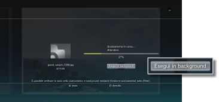
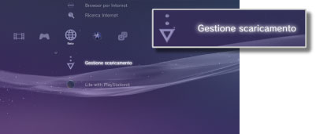

Rete > Scaricamento in background
Scaricamento in background
La funzione di scaricamento in background permette di eseguire altre operazioni durante il download di dati multipli o di file di grandi dimensioni. Questa funzione è disponibile solo quando sullo schermo visualizzato durante lo scaricamento è presente la dicitura [Esegui in background].

Note
- Lo scaricamento in background potrebbe non essere consentito, in funzione del tipo o del numero di dati da scaricare.
- L'installazione potrebbe richiedere l'uso di dati scaricati, quali giochi o file video. Al termine dello scaricamento, i dati che richiedono installazione verranno visualizzati come
 o
o  in ogni categoria.
in ogni categoria. - Lo scaricamento in background potrebbe non essere disponibile se sul disco rigido vi sono dati non installati.
- Se il sistema PS3™ viene spento durante un'operazione di scaricamento in background, vengono salvati i dati scaricati fino a quel momento. Lo scaricamento viene automaticamente riavviato al successivo avvio e connessione a Internet del sistema PS3™.
- Lo scaricamento in background verrà temporaneamente interrotto qualora venisse eseguita una delle operazioni seguenti. Lo scaricamento verrà automaticamente ripreso al completamento di tale operazione.
- - La riproduzione di un DVD o di un disco Blu-ray
- - L'utilizzo di funzioni di rete di giochi online *
- - L'avvio del software di formattazione per PlayStation®2
- - L'avvio di
 (Folding@home™)
(Folding@home™) - - L'utilizzo della chat vocale / video
- - L'esecuzione di un aggiornamento del sistema
- - La regolazione delle impostazioni in
 (Impostazioni)
(Impostazioni)
*
L'operazione di scaricamento in background verrà temporaneamente interrotta quando un gioco sta per finire.
Avvisi
- Alcuni titoli di software in formato PlayStation®2 o PlayStation® possono essere eseguiti in modo differente sul sistema PS3™ rispetto all'esecuzione sui sistemi PlayStation®2 o PlayStation®, oppure non vengono eseguiti correttamente sul sistema PS3™.
- Inoltre, il software in formato PlayStation®2 non è riproducibile su alcuni sistemi PS3™. Per i dettagli, vedere [Tipi di dischi riproducibili], visitare il sito Web di SCE per la propria zona o rivedere la documentazione inclusa con il sistema PS3™.
Gestione scaricamento
Questa opzione viene visualizzata solo quando viene eseguito uno scaricamento in background. È possibile controllare lo stato o annullare lo scaricamento dei dati da  (Browser per Internet) o
(Browser per Internet) o  (PlayStation®Store). Selezionare
(PlayStation®Store). Selezionare  (Gestione scaricamento) sotto
(Gestione scaricamento) sotto  (Rete).
(Rete).

Controllo dello stato di scaricamento
Selezionare l'icona dei dati di cui controllare lo stato di scaricamento, premere il tasto  , quindi selezionare [Stato] dal menu delle opzioni.
, quindi selezionare [Stato] dal menu delle opzioni.
Annullamento dello scaricamento
Selezionare l'icona dei dati per cui annullare il download, premere il tasto e selezionare [Annulla] dal menu delle opzioni. Una volta annullato, il download viene cancellato da (Gestione scaricamento).
Interruzione e ripresa dei download
Selezionare l'icona dei dati per cui sospendere il download, premere il tasto e selezionare [Pausa] dal menu delle opzioni. Per riprendere il download, premere di nuovo il tasto e selezionare [Riprendi] dal menu delle opzioni.
Note
- Se si mette in pausa il download, accanto all'icona viene visualizzato
 .
. - Se si mette in pausa un download durante lo scaricamento di più elementi, viene avviato automaticamente il download dell'elemento successivo.
Interruzione di tutti i download
Selezionare l'icona per un download, premere il tasto e selezionare [Tutto in pausa] dal menu delle opzioni.
Ripresa di tutti i download
Selezionare l'icona per un download, premere il tasto e selezionare [Riprendi tutto] dal menu delle opzioni.